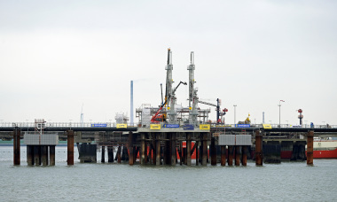

Châu Âu tự tin đủ khí đốt dù thiếu Mỹ

Sau xung đột Ukraine vào đầu năm 2022, Mỹ đã trở thành nước xuất khẩu LNG lớn nhất sang châu Âu khi EU chạy đua tìm nguồn cung thay thế nhiên liệu Nga. Việc mua khí đốt Mỹ, cùng với nhu cầu sưởi ấm thấp hơn do thời tiết ôn hòa và giá năng lượng cao buộc một số ngành công nghiệp đóng cửa, đã giúp lục địa già vượt qua hai mùa đông gần đây.